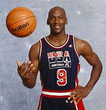

Michael Jordan
El mejor jugador de basquetball de la historia
Michael Jeffrey Jordan, nacido el 17 de febrero de 1963 en Brooklyn, Nueva York, es un exjugador profesional de baloncesto considerado por muchos como el mejor de todos los tiempos. Con una estatura de 1.98 metros y un talento excepcional, revolucionó el mundo del deporte, marcando una era en la NBA con los Chicago Bulls.
Jordan se destacó por su impresionante capacidad anotadora, su mentalidad ganadora, y su habilidad para liderar a su equipo en los momentos más importantes. Fue el rostro del baloncesto en los años 90 y ayudó a globalizar la NBA como una liga internacionalmente reconocida.
Carrera profesional
Jordan debutó en la NBA en 1984 con los Chicago Bulls. Rápidamente se convirtió en una superestrella gracias a su estilo explosivo y su competitividad. Ganó tres campeonatos consecutivos entre 1991 y 1993. Luego, se retiró brevemente para jugar béisbol profesional tras la muerte de su padre.
En 1995 regresó a la NBA y llevó nuevamente a los Bulls a otros tres campeonatos seguidos (1996–1998). Se retiró una segunda vez en 1999, pero regresó por última vez en 2001 con los Washington Wizards, donde jugó hasta 2003, cuando se retiró definitivamente.
Logros destacados
- 🏆 6 campeonatos de la NBA con los Chicago Bulls
- 🏅 5 veces MVP de la temporada regular
- ⭐ 14 veces All-Star
- 🎯 10 títulos de máximo anotador
- 🥇 2 medallas olímpicas de oro (1984 y 1992)
- 🛡️ Jugador Defensivo del Año (1988)
- 🏀 Miembro del "Dream Team" en Barcelona 1992
Estilo de juego
Michael Jordan era un jugador completo: agresivo en ataque, dominante en defensa, con una gran visión de juego y una ética de trabajo inigualable. Su salto, control del balón y precisión lo convirtieron en una amenaza constante para los rivales. Su apodo "Air Jordan" proviene de su capacidad para "volar" hacia la canasta.
Vida después del baloncesto
Tras su retiro, Jordan se convirtió en un exitoso empresario. Es dueño de la marca Jordan Brand (parte de Nike), una de las más influyentes en la industria deportiva. También fue propietario del equipo de la NBA Charlotte Hornets.
Además, su historia ha sido contada en libros, películas y documentales, como la exitosa serie "The Last Dance" (2020), que muestra su carrera y legado.
Frase icónica
“He fallado más de 9000 tiros en mi carrera. He perdido casi 300 partidos. En 26 ocasiones confiaron en mí para hacer el tiro de la victoria y fallé. He fallado una y otra vez en mi vida. Y por eso he tenido éxito.”
Legado
Michael Jordan no solo fue un ícono deportivo, sino también un símbolo de excelencia, disciplina y determinación. Su influencia trascendió el baloncesto, inspirando a millones en todo el mundo. Para muchos, sigue siendo el referente máximo de lo que significa ser un verdadero campeón.